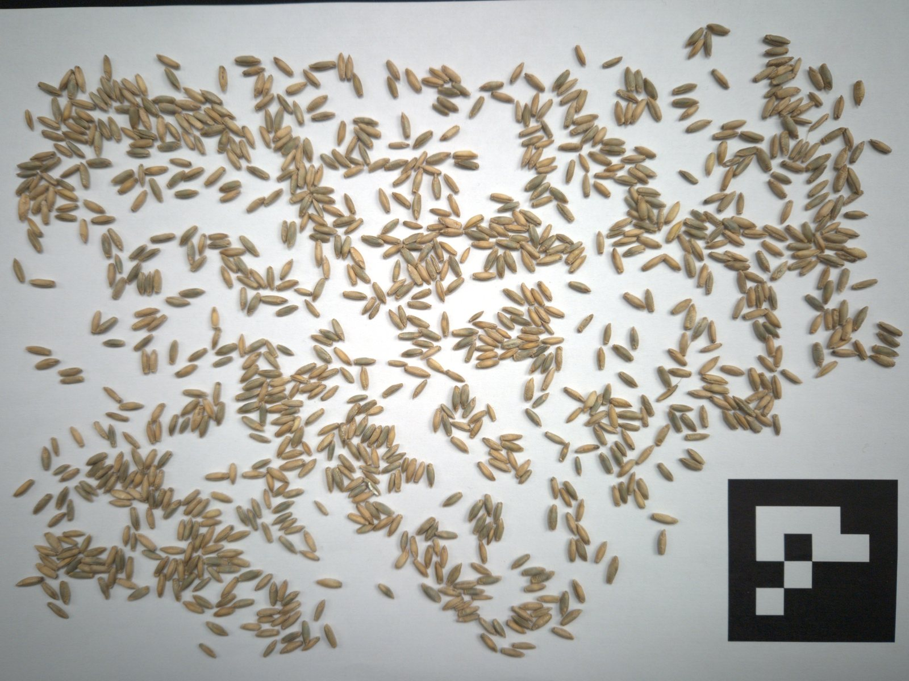
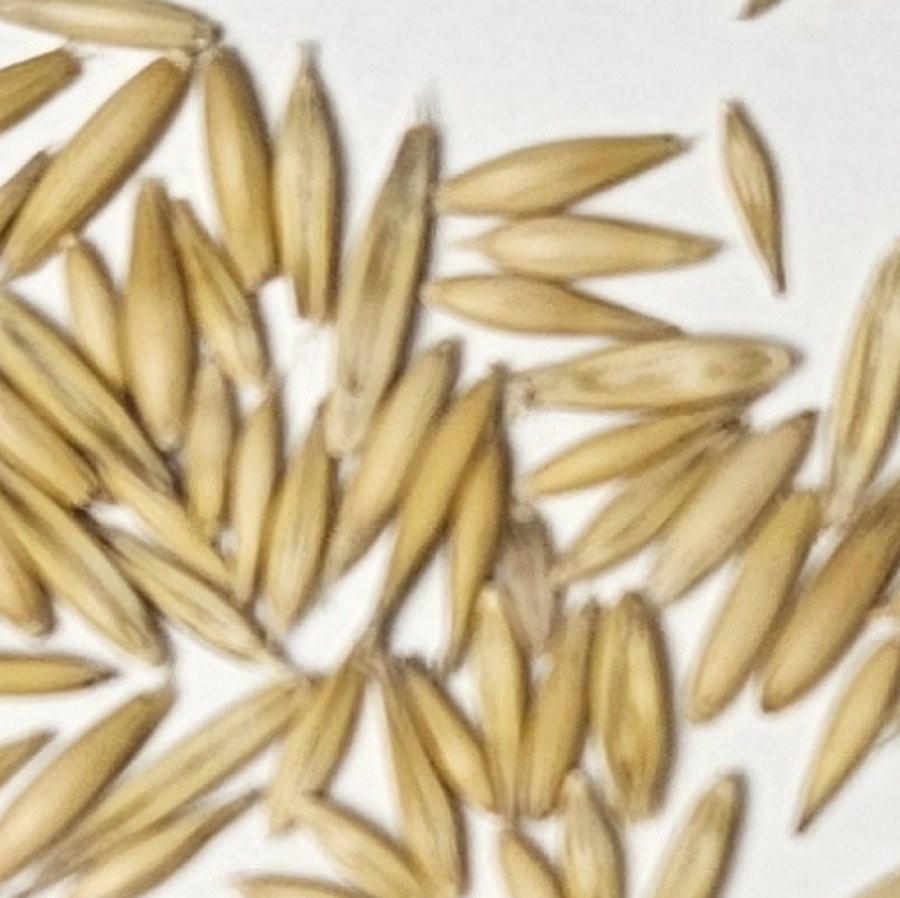

Das Tausendkorngewicht stellt die Drillmaschine ein. Heute wird dafür von Hand gezählt – und
1 % verzählt heißt 1 % falsch gesät, auf dem ganzen Schlag.
Mit Tausendkorn: drei Handgriffe.
01Handvoll schöpfenaus mehreren Stellen im Sack, keine Auswahl
02Auf ein weißes Blattgrob verteilen, kleine Häufchen sind in Ordnung
03Ein Fotovon oben, mit Handy oder iPad

Foto ✓

1
Stelle 1 · die App meldet sich selbst
„Drei Haferkörner übereinander – links eins übersehen, rechts zwei doppelt.“
Ein Tipp, korrigiert.
So zählt die App
In kleinen Ausschnitten, Korn für Korn.
Das Foto wird in kleine Ausschnitte geteilt.
Jeder Ausschnitt wird einzeln gezählt – bei wenigen Körnern verzählt sich auch eine KI kaum.
Jedes erkannte Korn bekommt einen Punkt. So ist jede Zählung nachprüfbar.
Wo sie unsicher ist, zeigt die App die Stelle.
0
Körner gezählt
nachgezählt: 1000 · Roggen aus den Testfotos, vorher nie gesehen
Gemessen
Gemessen, nicht versprochen.
30 zurückgelegte Fotos · einmal gemessen
0 %
im Mittel daneben – rund 6 Körner bei gut 300.
Fotos aus denselben Aufnahmetagen wie das Training. Ein zweiter Zähler (YOLO, offline verglichen, nicht in der App) lag auf denselben Fotos bei 3,2 Körnern.
Testfotos · 6 × 1000 Körner, eigener Aufnahmetag
0 %
im Mittel daneben – 15,8 Körner. Anderes Licht, teils gebeiztes Saatgut, Roggen war neu.
So haben wir gemessen
Prüffotos vorher festgelegt und zurückgelegt.
Finale Version einmal gemessen: 30 + 6 Fotos. Ein früherer Lauf (11 Fotos) wurde nach Fehlerkorrekturen verworfen.
Jedes erkannte Korn ein Punkt – jeder kann nachzählen.
Ziel 99,9 %Entwicklungsziel – noch nicht erreicht
Schwierig bleiben dichte Haufen und neues Licht. Daran arbeiten wir.
Die App
Vom Foto bis zur Drillmaschine.
1Art wählenSorte antippen, fertig
2Foto zählen lassen1–2 Minuten, läuft im Hintergrund
3Unsichere Stellen prüfennur wo nötig – oder überspringen
4Wiegen, TKG und kg/ha ablesenGewicht eintippen, die App rechnet
1–2 Min. pro Probe0,12–0,79 US-$ KI-Kosten pro Foto, gemessen
Live aus der App, zwei Einzeltests: am PC 488 statt 493 Körner in 47 s · am iPad über Hotspot 54 s